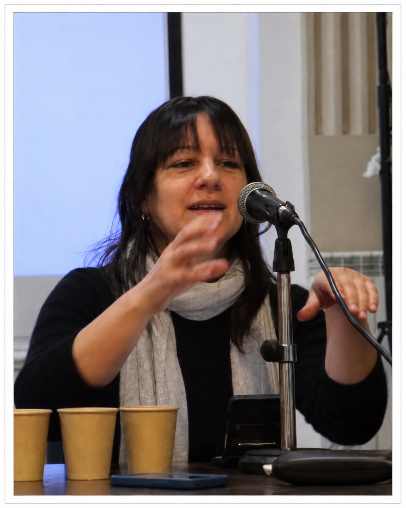

Ex integrante
Adriana Minardi
Afiliación institucionalUniversidad de Buenos Aires (UBA) · Consejo Nacional de Investigaciones Científicas y Técnicas (CONICET)
ORCID0000-0002-7371-3998
Perfiles y sitios
Adriana Minardi es Licenciada en Letras y Doctora, con mención en Literatura, por la Facultad de Filosofía y Letras de la Universidad de Buenos Aires, donde se desempeña como profesora adjunta regular de Literatura Española III. Es también profesora adjunta regular de Semiología del Ciclo Básico Común de la Universidad de Buenos Aires (UBA), cátedra Vitale, e investigadora adjunta del Consejo Nacional de Investigaciones Científicas y Técnicas (CONICET). Se ha especializado en la problemática de la memoria en relación con la literatura.
Adriana Minardi participó en el GIAR en investigaciones vinculadas con los archivos de la represión y los estudios discursivos de la memoria.